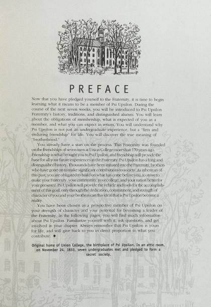

Archives /
Member Education / College Tablet 4th Edition (2004)
Member Education
College Tablet 4th Edition (2004)
128 pages
143 MB
2004

Download the PDF All of Member Education- CollectionMember Education
- Year2004
- Pages128
- File size143 MB
- Words of text49,931
- FormatPDF, scanned
- TextOCR, searchable
- On psiu.orgsource page
Read this volume here, a page at a time.
The scan stays on psiu.org — only the pages you actually turn to are downloaded, so a 143 MB volume opens in a moment.
Search inside this volume
Finds every page of this volume that mentions your words, then jumps the reader there.